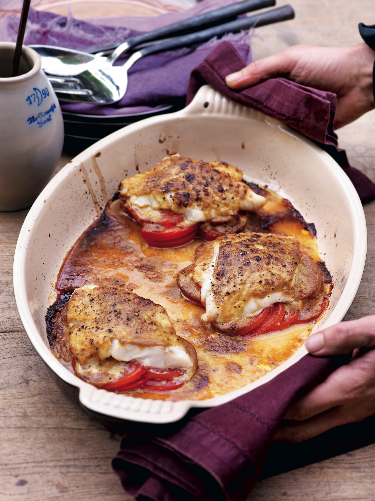

Kabeljauw met mosterd-sojasaus en tomaten.

Dit gerecht is van Pacasle Naessens. Ze noemt dit haar beste en meest
eenvoudige recept ooit.
Ingrediënten voor 4 personen.
- 4 kabeljauwfilets
- 8 tomaten
- 6 eetlepels mosterd
- 6 eetlepels sojasaus
Bereiding.
- Verwarm de oven voor op 180 °c.
-
Snijd de tomaten in fijne plakjes, snijd het harde witte gedeelte weg.
Leg twee hoopjes tomatenschijfjes dakpansgewijs naast elkaar in een
ovenschotel en kruid met zwarte peper.
-
Meng de mosterd met de sojasaus en twee eetlepels olijfolie. Giet een
paar lepels van de saus over de tomaten.
- Leg de filets op de tomaten en lepel er de rest van de saus over.
- Zet 15 tot 20 minuten in de oven.
Homepage